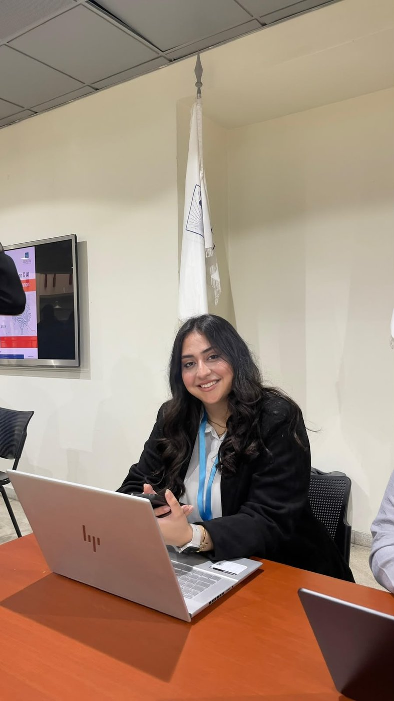
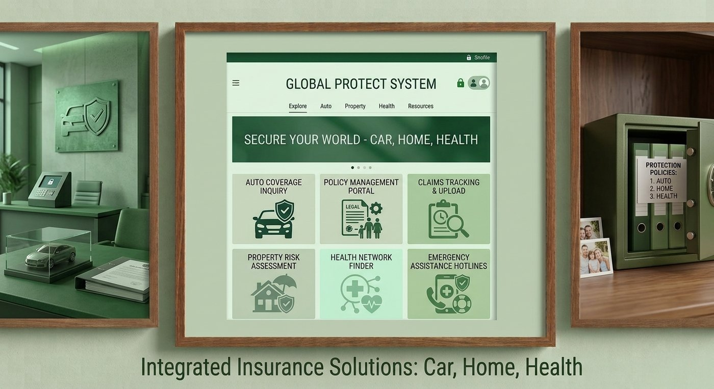
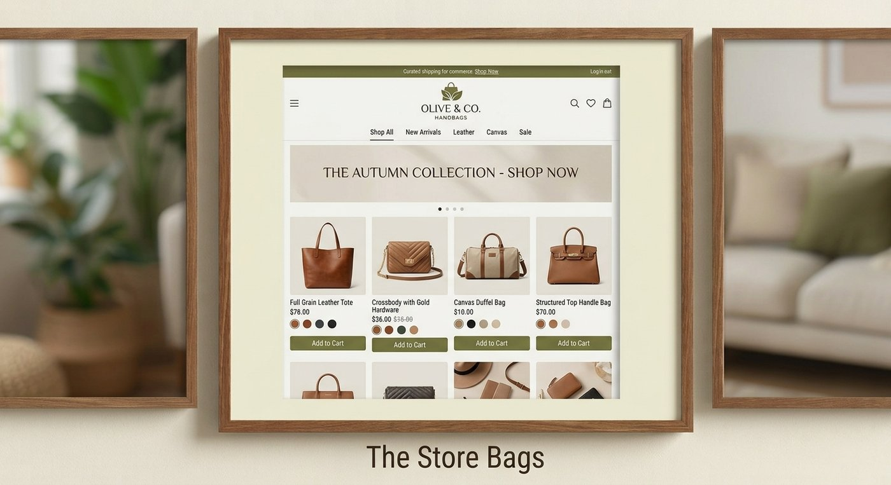
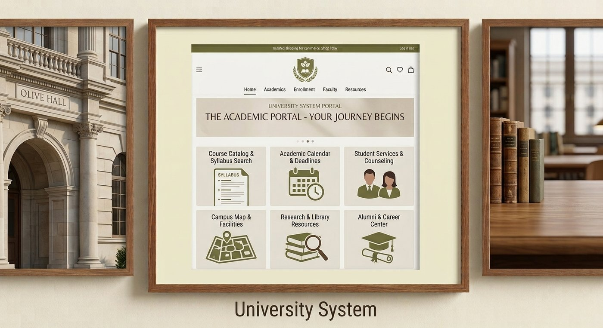
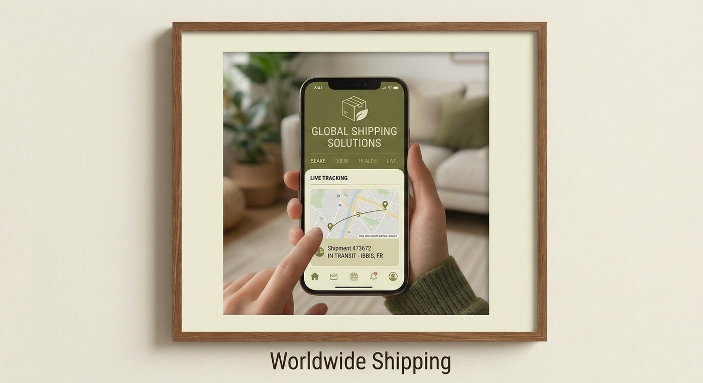
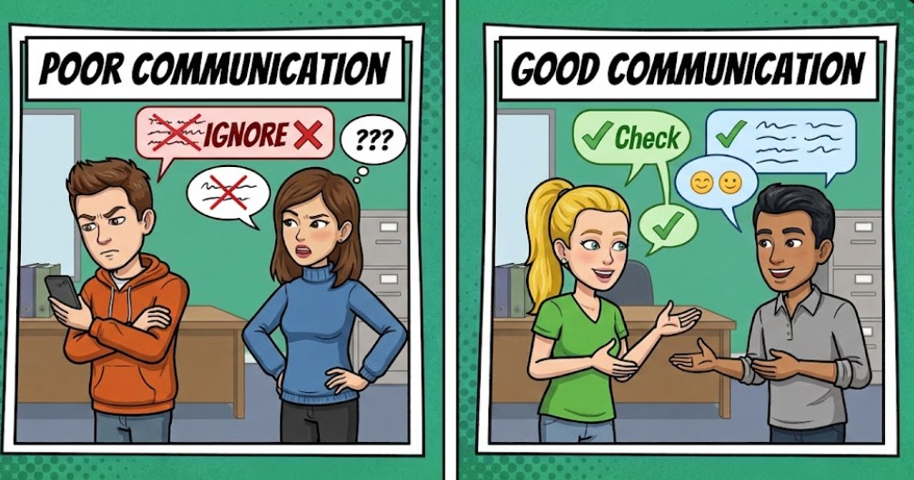
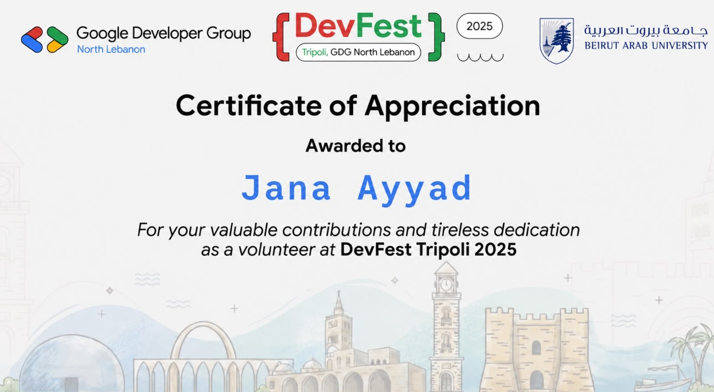

Third-year CS student focused on software development, databases and data structures. I turn coursework into real, working projects and keep building on what I learn.

I'm a Computer Science student at Beirut Arab University with a strong interest in technology and continuous learning. I'm developing hands-on knowledge in programming, web development, databases, data structures and software fundamentals — through academic coursework and practical projects, not just theory.
My interests sit around web development, AI, cybersecurity, databases, and data structures & algorithms — I like courses and projects where I can actually build something and see it work, rather than just study it on paper.
I'm an adaptable learner with solid problem-solving and teamwork skills, and I'm eager to keep applying what I've learned to real, hands-on project work.
To build a strong career in Computer Science by developing solid technical skills, gaining practical work experience, and continuously learning new technologies — building a combination of academic knowledge, real projects, and professional experience that prepares me for a successful career in tech.
Skills built through coursework and hands-on project work — organized by area, with where I've actually applied them.
Classes, inheritance & polymorphism, collections, and algorithmic problem-solving in Java; DOM & event handling in JavaScript; server-side basics in PHP.
Structured, semantic pages, responsive layout fundamentals, and interactive UI behavior.
Database design, entities & relationships, primary/foreign keys, and writing queries for data retrieval and manipulation.
Choosing the right structure for a problem, plus basic searching, sorting and algorithmic problem-solving.
Analyzing requirements, designing system structure, and organizing functionality following a defined development process.
Comfortable writing, organizing, testing and managing code inside a real development environment.
Course and team projects where I applied what I was learning to something functional.




Five goals covering my next two years — career readiness, technical growth, portfolio building, professional skills, and long-term career planning.
To build a strong career in Computer Science by developing solid technical skills, gaining practical work experience, and continuously learning new technologies — building a combination of academic knowledge, real projects, and professional experience.
Practical, hands-on experience where I can apply what I've learned at university — through projects, training, or future opportunities.
Improve the skills I'm currently learning rather than spreading myself across too many technologies.
Turn my university projects and activities into a professional portfolio that demonstrates what I can actually do.
Improve the communication, teamwork, organization and problem-solving skills that matter in the workplace.
Gradually prepare for my future career while learning which areas of Computer Science I enjoy most.
Everything below is also available as a formatted PDF, ready to send to an employer.
Location:
Tripoli, Lebanon
Phone:
+961 71 974 007
Email:
j.ayyad26@gmail.com
LinkedIn:
jana-ayyad-089721397
GitHub:
janaayyad26-code
Programming: Java, JavaScript, PHP
Web Dev: HTML, CSS, JavaScript, PHP
Databases: SQL, SQL Server, Design, Queries
Data Structures: Arrays, Linked Lists, Queues, Stacks, BST
Tools: VS Code, Git, GitHub, MS Office
Problem-Solving · Critical Thinking · Teamwork · Communication · Time Management · Adaptability
Motivated Computer Science student at Beirut Arab University with a strong interest in technology and continuous learning. Developing hands-on knowledge in programming, web development, databases, data structures, and computer science fundamentals through academic coursework and practical projects. Dedicated and adaptable learner with strong problem-solving and teamwork skills, eager to apply academic knowledge to real-world challenges.
Relevant Coursework: Data Structures, Database Systems, Web Development, Discrete Structures, Linear Algebra, Software Engineering
The complete letter is included below, and available as a downloadable PDF.
Dear Hiring Manager,
I am writing to express my eager interest in an internship opportunity where I can apply the knowledge developed through my current Bachelor of Computer Science studies at Beirut Arab University and my practical experience. I am seeking to contribute to real-world projects, strengthen my technical abilities in Java, JavaScript, PHP, HTML, CSS, and SQL, and continue developing as a dedicated Computer Science student.
Through my coursework and numerous projects, I have gained practical experience in areas including web development, database design, software engineering, and data structures. My academic work allowed me to strengthen my analysis skills and develop organized, systematically approached solutions.
Specifically, my project experience includes:
These projects have not only sharpened my technical acumen but also refined my problem-solving and critical thinking skills. Beyond my academics, volunteering at Google DevFest 2025 and the Lebanese Collegiate Programming Contest (LCPC) has provided valuable experience in collaborative and professional technical environments. I am a continuous, highly motivated learner eager to take initiative and grow professionally.
I would welcome the opportunity to discuss how my skills and background could benefit your team. I look forward to hearing from you.
My work experience taught me important skills that I can use in both my studies and future career. I learned how to communicate effectively, work as part of a team, manage my time, and take responsibility for my tasks. It also taught me how to adapt to new situations and solve problems when challenges arise.
These experiences helped me become more confident and professional. They also gave me a better understanding of my strengths and encouraged me to keep improving my technical and personal skills as I prepare for a career in software engineering.

How I learn best, and how I approach new or difficult material.
I write down important information, concepts, and explanations to organize my thoughts and remember what I learn.
I review what I have written and break difficult concepts into simpler ideas to make sure I understand them.
I learn best by actually doing things, solving exercises, completing tasks, and applying concepts instead of only studying theory.
I repeat exercises and practice different examples to strengthen my understanding and become more confident with the material.
I review my work, identify mistakes, and write down what I could improve so I can learn from the experience.
Beirut, Lebanon
Third-Year Computer Science Student at Beirut Arab University
linkedin.com/in/jana-ayyad-089721397Certificates and training completed alongside my coursework, plus the volunteering that's come with them.

Certificate of Appreciation — Google Developer Group North Lebanon, DevFest Tripoli 2025, in collaboration with Beirut Arab University. Click to view full size.
Have workshops, training, or awards to add? Drop them into this section using the same list-row pattern above — no invented entries are included by default.
I'm always glad to connect, share my work, or talk about Computer Science. Reach out any way that works for you.